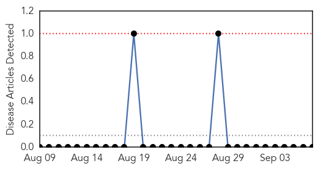
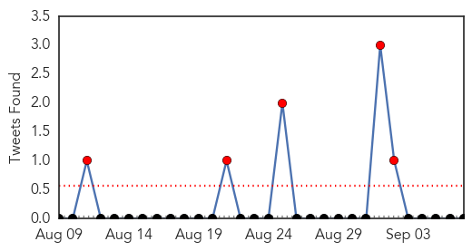
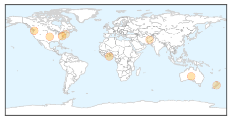

Yellow Fever
30-Day Web Trend
0 alerts, 0 warnings

30-Day Twitter Trend
0 alerts, 0 warnings

Article Locations

Article Confidences

Top Articles:
-
No articles found for Sep 07, 2015
Top Tweets:
-
No tweets found for Sep 07, 2015
Influenza
30-Day Web Trend
0 alerts, 0 warnings

30-Day Twitter Trend
4 alerts, 0 warnings

Article Locations
Article Confidences

Top Articles:
- 0.998
- New guidelines call for kids, health care workers to get flu shots
- 0.998
- New Guidelines Call for Kids, Health Care Workers to Get Flu Shots
- 0.980
- Egg shortage won’t affect flu vaccine supply
- 0.961
- Work with farm animals? make sure you have a Q fever check
- 0.943
- Northern Region takes measures to prevent bird flu
- 0.797
- New Zealand Horses Suspected Of Spreading Equine Influenza In Malaysia - Horse Racing News
- 0.751
- September 6, 2015 Archives
- 0.632
- AAP supports mandatory influenza vaccination of health care providers
Top Tweets:
-
No tweets found for Sep 07, 2015